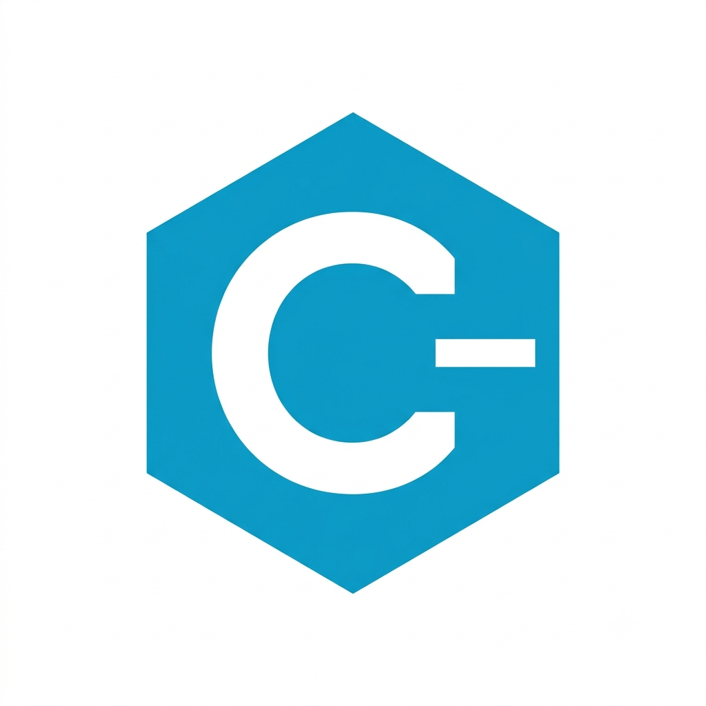
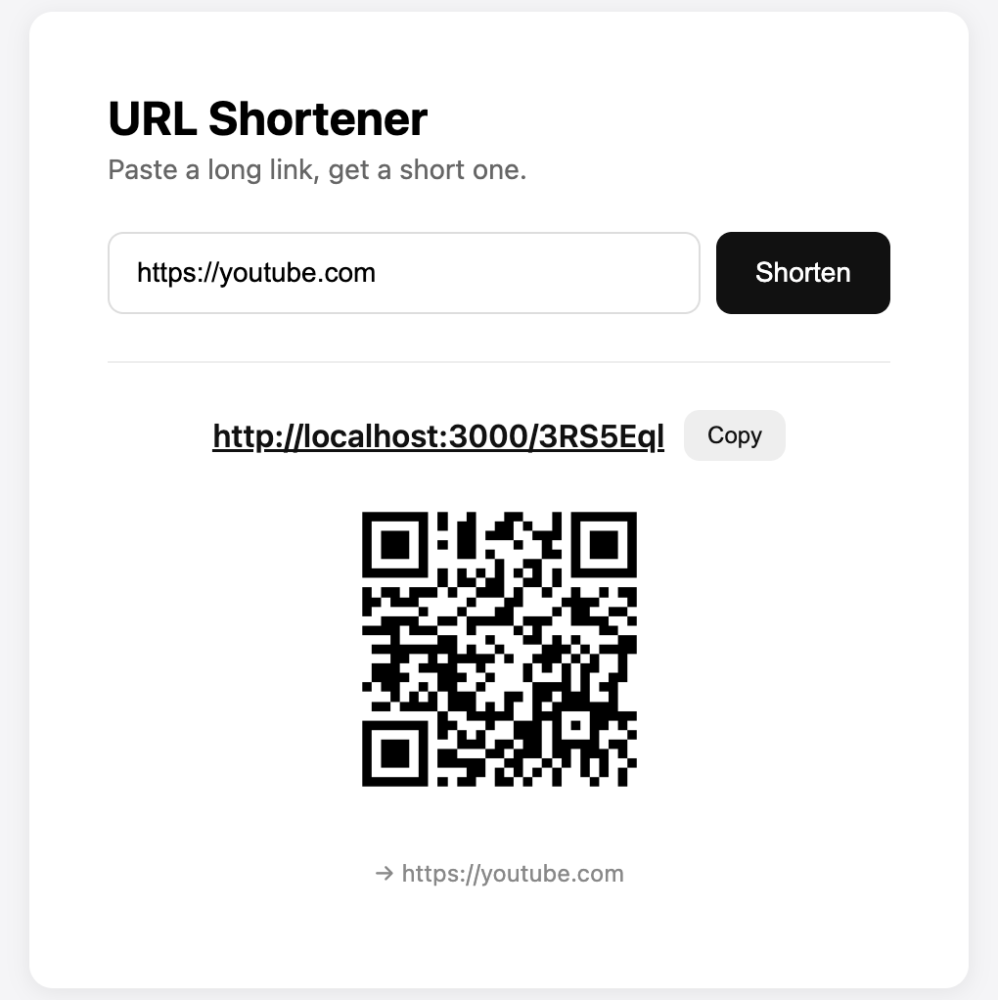

Moodr AI Music Mood Classifier
Machine learning application that classifies music using MFCC audio features and neural networks.
Technologies
- Python
- PyTorch
- Librosa
- NumPy
Below you'll find a collection of projects I've developed throughout my academic and personal journey. Each project demonstrates different technologies, design approaches, and problem-solving skills.
Many of these projects include live demonstrations hosted separately using cloud services. Feel free to explore the demos, source code, and technical details.
Machine learning application that classifies music using MFCC audio features and neural networks.

Compiler that translates Python code into Assembly before generating a Tiny-C representation.
A React client for browsing, searching, and filtering movies using the TMDB API, with debounced search, genre and release-year filters, infinite scroll, and persistent favorites.

A full-stack URL shortener with a lightweight HTML, CSS, and JavaScript frontend and an Express backend containerized with Docker. Uses Prisma over PostgreSQL for storage, nanoid to generate short codes, Redis for fast lookup caching, and generates a QR code for every shortened link. In progress — tests, Docker Compose, and deployment still to come.
A dashboard for visualizing Steam game statistics: profile lookup by SteamID64, vanity name, or profile URL, playtime charts, achievement progress, friend navigation, and side-by-side comparison of two profiles' shared games and playtime.
Planned
Planned
Planned
Always building something new.
Always building something new.
Identify the problem and define measurable goals.
Create scalable architectures before writing code.
Implement features incrementally while maintaining clean code.
Validate functionality, usability, and edge cases.
Host applications using modern cloud platforms.
Continue refining projects through user feedback and new ideas.
As projects become production-ready, their live demonstrations will be hosted independently using Django and cloud hosting platforms. Each project card above will link directly to the deployed application.